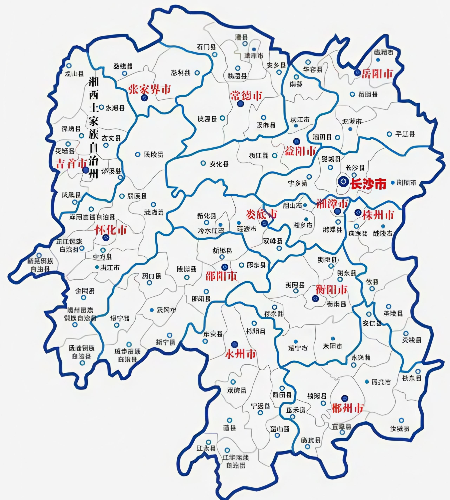

南方画廊
我们

重庆
介绍文案
湖南

湖南，位于中国中部，长江中游，因大部分区域处于洞庭湖以南而得名"湖南"。这里山水秀丽，历史悠久，文化底蕴深厚，素有"鱼米之乡"、"有色金属之乡"的美誉。
湖南是伟人故里，红色热土，也是少数民族聚居地，拥有丰富多彩的民族文化。湘菜、湘绣、湘剧、湘瓷等湖湘文化元素享誉中外。
探索"我的家乡"---芷江特色美食
湘菜是中国八大菜系之一，以香辣鲜美著称...
文化遗产
湖南拥有丰富的非物质文化遗产，如湘绣、土家族摆手舞、侗族大歌等。传统建筑如侗族风雨桥、凤凰古城等也极具特色。
旅游去处
湖南旅游资源丰富，有世界自然遗产张家界、历史文化名城凤凰、岳阳楼、韶山毛泽东故居等著名景点。